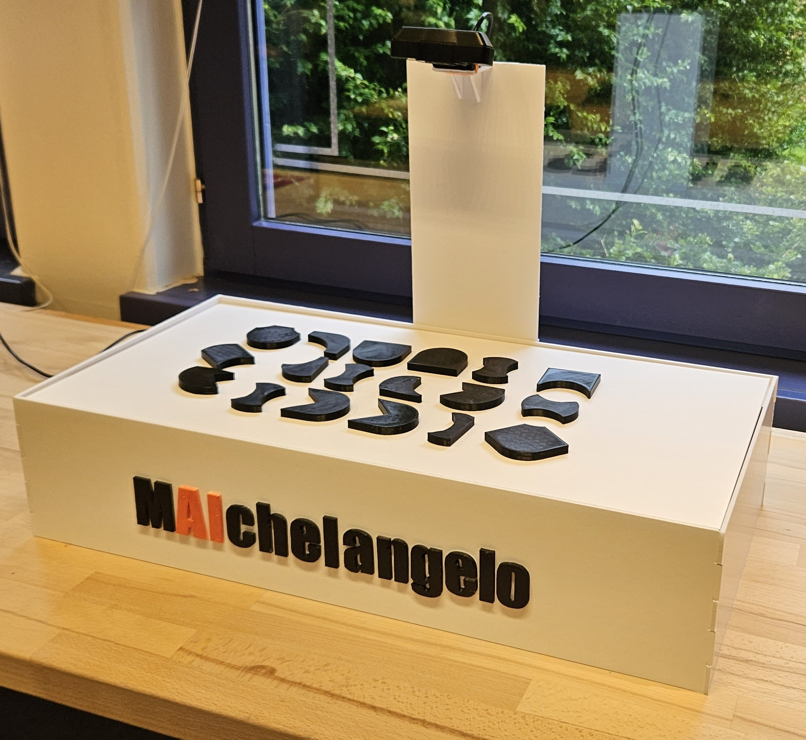
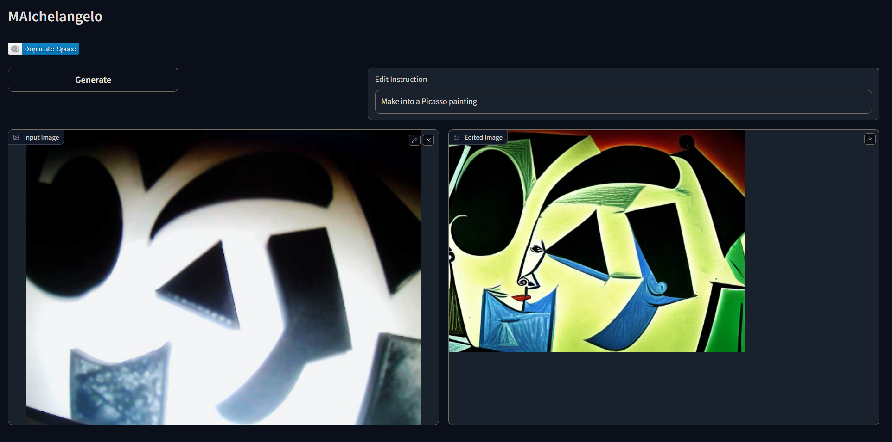
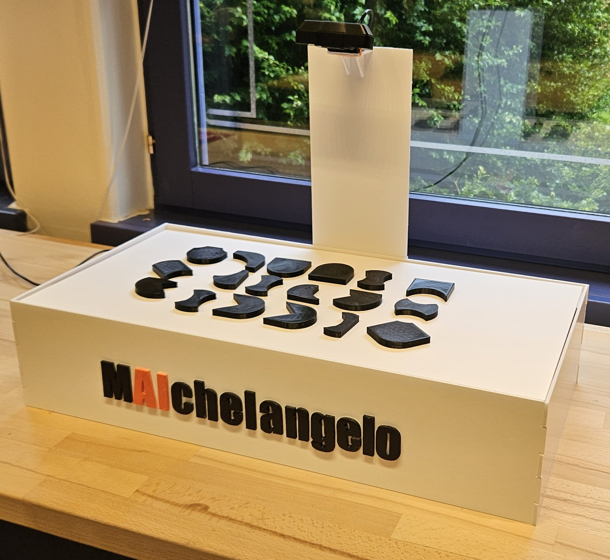
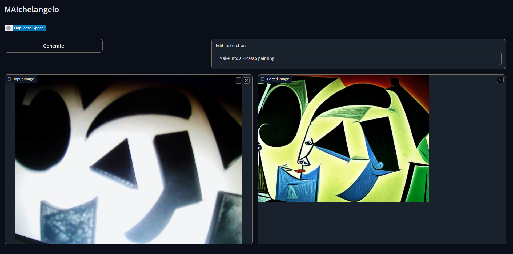

Project 2 - MAIchelangelo
Room Scale AI
MAIchelangelo is the concept we created during our second three week project. The group was administratively created, but ended up being group members who all had a bachelors degree in Interaction Design, however none of us had much experience working with eachother. The concept revolves around art museums by creating an installation which aims to inform the users of AI while interacting with an art installation. An AI then interprets the shapes users create and uses it to make art, which is displayed on the wall where the users stand.
Brainstorm
- Trash sorting
- This idea revolves around automatically sorting trash, create fun interactions or automatically notify when full
- Art, museums, experience technology
- This idea revolves around integrating human interaction in art, make museums more interactive or make art based on interactions
- Emotional Pet Rock
- This idea of this is to create a companion that can support people with different mental health issues.
Starting Out
To start out the project we started discussing the subject of room scale to get a common understanding of what this means in relation to the project.
We then started out discussion different types of rooms that could be interesting to work with, these consisted of; Restaurants, bars, living room, bathroom, kitchen, teaching spaces.
Without choosing any specific room, we started brainstorming different ideas that could fit in either of those rooms. A few examples of this can be seen in the list to the left.
To figure out which one would be the most interesting to choose, we started exploring what types of solutions that already exists within each category.
As we found the least solutions for AI implemented in art museums, this is what we chose as it was also the most interesting to the majority of the group.
The Process
After having settled on a topic, we wanted to get an idea on how art installations are currently done, so we decided to take a trip to the art museum "Kunsten"
where we could get a further understanding of the topic.
Before going to the museum we created a plan for how we wanted to explore Kunsten. This involved a list of questions we wanted to ask the staff but also some questions we could ask visitors.
Finally we created a plan for how we wanted to do observations at kunsten, however when we came to Kunsten we only interviewed one staff member and explored the facilities and art pieces while doing some observations.
From our interviews we learned that the art museum are very interested in having more interactive installations and also are very open for implementations of AI, as they want to be modern.
This lead to us coming up with the concept of having an interactive wall much like the one they already have using bands to make shapes.
Following this we started working on our prototype. We created a somewhat working prototype, using gradio to implement an AI and 3D printing some shapes and creating a cardboard box.
MAIchelangelo
The result of the projected ended up being our product MAIchelangelo, which is a smallscale concept prototype of our idea. The prototype has a carboard surface where users can place the
3D printed shapes to create their own patterns and shapes. A connected computer then uses the installed webcam to read the picture and through AI it creates an art piece based on the created pattern.
The picture generated is also based on the prompt given, meaning that if you tell it to create it in the style of Picasso, it will attempt to do so.
Furthermore there is a randomization value, which can be changed that determines how much it should weigh the shapes against the prompt.
In the full size concept the board is supposed to be as wide as the screen, which is on the wall. This is to allow multiple users to interact with the wall at the same time.
The art created is showed on the wall, as the AI interprets it, for all bystanders to see.
 



Reflections
While noone in our group had much experience working with eachother, we were familiar with eachother quite well.
This had a positive influence on the group dynamic as we all generally were on the same page. Furthermore we collectively also had the same experience from the previous project,
where we spend much less time on the ideation phase of the project, which made us spend a bit more time discussing ideas this project. This meant that we had a bit less time during the rest of the project.
Initially we planned on going to Kunsten twice, but due to the time constraints we only went there once.
With more time we could have done a more indepth evaluation of Kunsten and potentially tested our prototype there, which it would have benefitted from.
Also if our exploratory trip to Kunsten had went as planned, we also might have gotten more information. Specifically our research would have benefitted from interviewing some of the visitors in
regards to the installations as it did seem like most of them did not see the installation wall.
During our trip to Kunsten we also did experience some miscommunication within the group, where one group member wanted to map the installation room, which he ended up doing by himself and we did not use it in the end.
If the project was longer it might have proven useful as it would have given us insight into how the visitors move around, and if there would be a better place to place the installation.
Although we have some timeframe problems early on, we ended up having more time than needed to create the prototype, which enabled us to make a higher fidelity prototype.
This would probably not have been the case if we had more prior experience with these shorter form projects, and could have spaced out our activities more fitting. However it did make the last part of the project more enjoyable for us as a group,
as we had more time to get to know eachother and have fun with the prototype.
Much like the previous project, it did feel like we had become more productive than any prior project, due to the shorter timeframe that we have had. This also transfered into the third project.